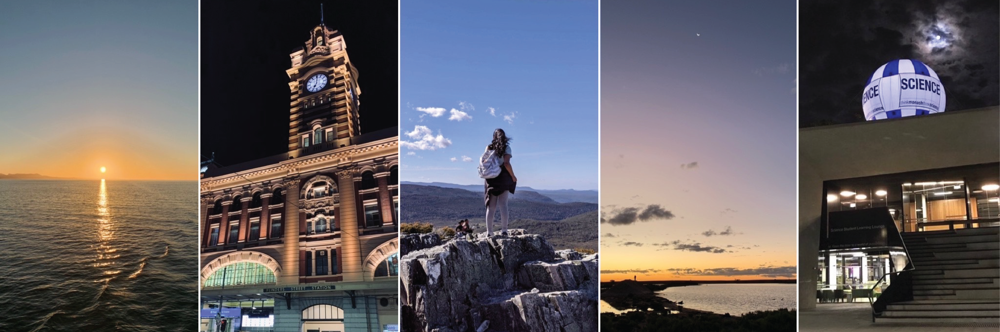

About Me
Hi, my name's Shanika and I'm an astrophysicist! I'm currently a postdoctoral researcher at the Observatoire de la Côte d'Azur (Lagrange laboratory) in Nice, France.
I study pairs of the most extreme objects in the universe (e.g. black holes and neutron stars) using gravitational waves to understand how these systems lived their lives. I am a member of the LIGO-Virgo-KAGRA Collaboration as part of the Virgo ARTEMIS group. Prior to this, I completed my PhD in March 2013 at Monash University and was a member of the LIGO and OzGrav
Alongside my research activities, I am also involved in various science communication and volunteer roles. I am part of the Space Australia team, where we bring space news across Australia and New Zealand, to the community. I manage the social media communication and am also an occasional writer. See my latest article on Cosmic lighthouses and continuous gravitational waves. I am also part of the IncludeHer movement, a campaign to improve the visibility of women in high school STEM curricula across Australia.
In my spare time I love to papercraft (IG: @scrapwithstardust). This mainly involves making greeting cards, but I also scrapbook from time to time. However, these days I am working on learning some more digital creative skills, making graphics and materials for science presentations, articles and more. I hope to add these to my website soon! :)
I also enjoy singing, playing chess, and making desserts!
If you would like to get in touch, send me an email: shanika.galaudage@oca.eu
--
Home | Back to home